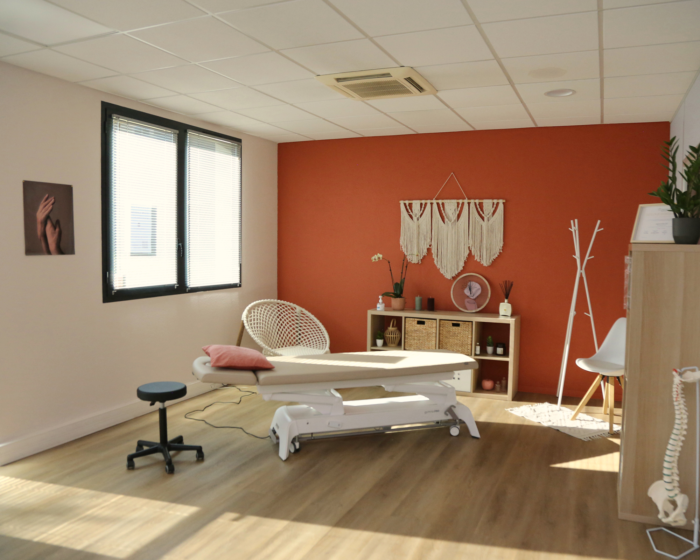
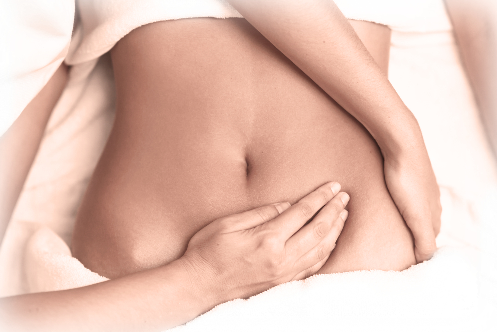

Échantée,
Isaora
Je cherchais une manière de prendre soin des autres, d’écouter le corps et de comprendre ce qu’il exprime. Cette recherche m’a conduite à l’ostéopathie, qui est devenue bien plus qu’un métier : un art d’accompagner avec attention, confiance et respect.
Depuis l’ouverture de mon cabinet à Montbéliard, j’accueille chaque patient avec bienveillance et douceur, en restant à l’écoute de ses besoins uniques.
Mon parcours de formation
2025
Approche clinique systémique de l’endormissement et du sommeil chez les bébés - COS EUROPE

Cette formation m’a profondément touché en me fournissant des clés concrètes pour soutenir les tout-petits dans leurs nuits. J’y ai découvert une approche intégrative, centrée sur les rythmes de l’enfant, l’environnement familial et les signaux corporels subtils. Elle m’a permis de mieux comprendre comment accompagner les familles vers un sommeil apaisé, avec bienveillance et clarté.
2025
Approche clinique d’une succion efficace durant l’allaitement et/ou au biberon - COS EUROPE
J’ai vécu cette formation comme une véritable révélation, car elle m’a donné des moyens précis pour aider les nouveau-nés à s’alimenter dans de meilleures conditions. Entre gestes techniques, postures adaptées, et écoute attentive des dyades mère-enfant, j’ai appris à intervenir avec finesse pour favoriser une succion efficace et sereine, que ce soit au sein ou au biberon.
2025
Allaitement Maternel – Module 1 - Réseau Périnatalité de Franche-Comté
Ce module a été un pilier dans ma compréhension de l’allaitement. Il combinait fondements physiologiques, conseils pratiques et soutien affectif. J’en suis ressortie avec une vision plus globale, capable d’accompagner les mères avec empathie, en respectant leur parcours et en leur apportant des outils concrets pour un allaitement réussi à leur rythme.
2024
Physiologie de la fertilité de la femme - Institut de Formation à la Fertilité

Cette exploration m’a ouvert les yeux sur les mécanismes fascinants du corps féminin. J’y ai redécouvert le cycle, les signaux de fertilité, les impacts hormonaux dans une perspective holistique. Elle m’a renforcée dans ma capacité à accompagner les femmes avec respect de leur corps, de leurs choix et de leur parcours fécond.
2023
Santé de la femme - Kookie Learning
Avec sensibilité et pédagogie, cette formation m’a plongée dans l’univers de la santé féminine dans toutes ses dimensions : physiologique, émotionnelle, sociale. J’ai pris conscience de l’importance d’une approche inclusive et adaptée, visant à soutenir les femmes tout au long de leur vie, dans leurs besoins spécifiques et souvent méconnus.
2023
Ostéopathie uro-gynécologique : grossesse, accouchement, post-partum - YGY For You
J’ai vécu cette formation comme un tournant professionnel. Grâce à l’approche ostéopathique de Catherine RYBUS, j’ai appris à intervenir naturellement et en douceur tout au long du parcours maternel : en préparation à l’accouchement, lors de la grossesse et dans le post-partum, avec des techniques spécifiques pour ré-harmoniser le corps féminin en transition.
2023
Diplôme d'Ostéopathe (D.O.) - Collège Ostéopathique Strasbourg (COS) Europe
Diplôme en 5 ans au COS Europe Strasbourg. Titre RNCP reconnu, avec un cursus alliant cours théoriques approfondis, pratique ostéopathique encadrée et stages cliniques. Cette formation m’a permis d’acquérir des compétences complètes pour évaluer, diagnostiquer et traiter les troubles musculosquelettiques, nerveux et viscéraux, tout en développant une approche globale et personnalisée de la santé. Elle m’a également appris à collaborer avec d’autres professionnels de santé pour offrir un accompagnement sûr, efficace et coordonné.
mon parcours professionnel
Depuis 2023
Cabinet - Montbéliard
Exercice libéral au sein de mon cabinet, offrant des consultations personnalisées pour un public varié, avec une spécialisation en accompagnement périnatal et santé féminine.
2023 - 2024
Praticienne libérale - Hôpital Nord Franche-Comté - Trévenans - Gynécologie-Obstétrique
Consultations ostéopathiques en milieu hospitalier, en collaboration avec l’équipe de gynécologie-obstétrique pour accompagner les patientes avant, pendant et après la grossesse.
2023
Stagiaire - Nouvel Hôpital Civil - Strasbourg
Observation et pratique encadrée en service hospitalier, avec une immersion dans la prise en charge pluridisciplinaire des patients.
2023
Stagiaire - Groupe Hospitalier Saint-Vincent - Strasbourg
Découverte de l’activité ostéopathique en milieu hospitalier et participation au suivi des patientes dans différents services.
2023
Stagiaire - Clinique du Ried - Schiltigheim
Participation aux soins ostéopathiques auprès de patientes et accompagnement dans des parcours pré et postnataux.
2023
Stagiaire - Hôpital de Hautepierre - Strasbourg - Gynécologie-Obstétrique
Observation et participation à la prise en charge ostéopathique des patientes en gynécologie-obstétrique, en coordination avec l’équipe médicale.